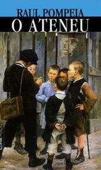
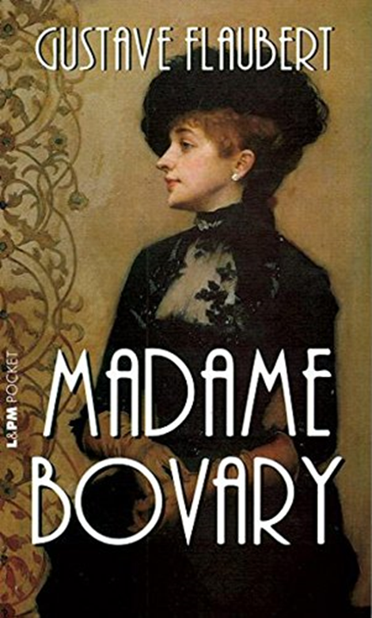
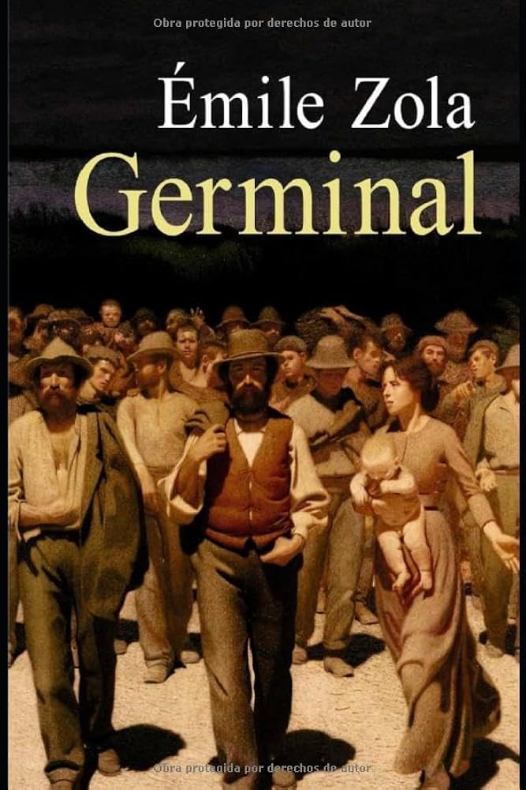

| Literatura |
Resumo |

| “Memórias póstumas de Brás Cubas”, publicado em 1881, é uma das principais obras do escritor Machado de Assis. A publicação desse romance é considerada o marco inicial do Realismo no Brasil, e seu autor, por consequência, é reconhecido como o pai de tal movimento em terras brasileiras."
|
 |
A história é narrada por Bento Santiago, que recebe o apelido de Dom Casmurro por seu jeito fechado. Já passando dos 50 anos, ele resolve “atar as duas pontas da vida” e relembrar tudo que aconteceu desde sua juventude: a promessa de sua mãe de fazê-lo padre, o amor pela vizinha Capitu, o seminário e a amizade com Escobar. Na segunda metade da história, o ciúme doentio de Bentinho e as suspeitas sobre Capitu surgem, tornando-se o tema principal. |
|  |
O Ateneu, de Raul Pompeia, é uma obra do movimento realista brasileiro. O livro foi publicado em 1888 e é considerado uma das mais importantes do período.
O romance conta a história de Sérgio, um menino que é enviado para um colégio agropecuário no Rio de Janeiro, o Ateneu, que é dirigido pelo Aristarco. O colégio mantém regras rígidas e princípios da aristocracia da época. A obra critica a sociedade brasileira do final do século XIX, e tem como metáfora o Ateneu, um lugar onde vence sempre o mais forte. |
|  |
Madame Bovary, escrito em 1857 por Gustave Flaubert (1821-1880), é uma das maiores obras da literatura francesa. O livro, considerado realista, critica a idealização do amor e traz temas polêmicos à tona como o adultério e o suicídio. |
| Literatura |
Resumo |
 |
“O Cortiço” é um romance escrito por Aluísio Azevedo que tem como cenário e personagem principal uma habitação coletiva de pessoas pobres. O autor conta sobre a rotina e as relações dos personagens que nela vivem, explicando seus comportamentos a partir das influências do meio-ambiente, da raça e do contexto histórico. |
 |
Inglês de Souza foi um dos introdutores do Naturalismo no Brasil, mas os seus primeiros romances não encantaram muito o público. Tornou-se conhecido com O Missionário. Nesse romance, descreve com fidelidade a vida numa pequena cidade do Pará (Silves), revelando agudo espírito de observação, amor à natureza, fidelidade ao comportamento humano do povo da região amazônica. Alguns críticos literários dizem que a obra nasceu do desenvolvimento do conto “O Sofismo do Vigário” |
 |
Considerado um dos primeiros romances a retratar a homossexualidade do Brasil, o Bom-Crioulo gira em torno do amor entre Amaro, escravo foragido aceito na Marinha, e Aleixo, jovem branco e frágil.
Pelo tema pouco explorado, principalmente de forma tão explícita, o Bom-Crioulo foi motivo de escândalo na época de sua publicação. |
|  |
O livro Germinal é uma das principais obras do naturalismo europeu. Ele fala da realidade dos trabalhadores das minas de carvão na França do século XIX. Esses personagens são explorados, exercem o seu ofício em condições subumanas e vivem em grande miséria. |